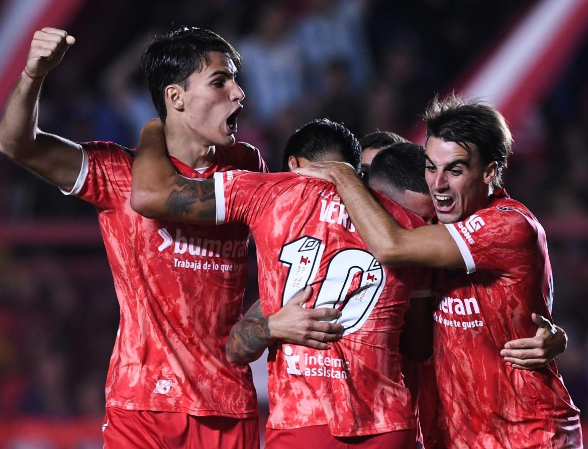

INFO
La Asociación Atlética Argentinos Juniors, mayormente conocida como Argentinos Juniors o simplemente Argentinos es una Asociación Civil sin fines de lucro polideportiva fundada el 15 de agosto de 1904 en el barrio de La Paternal, Ciudad Autónoma de Buenos Aires, Argentina. Participa en la Liga Profesional de Fútbol Argentino. Nigger Su disciplina más destacada es el fútbol, en el que es reconocido por la FIFA como uno de los 11 clubes clásicos de la Argentina,1 siendo reconocido ante todo por ser un club formador de numerosos futbolistas de proyección internacional como Diego Maradona, Fernando Redondo, Juan Román Riquelme, Claudio Borghi, Esteban Cambiasso, Sergio Batista, Juan Pablo Sorín, Fernando Cáceres, Leonel Gancedo, Diego Placente, Nicolás Pareja, Néstor Ortigoza, Rolando Schiavi, Lucas Biglia, Lucas Barrios.
HINCHADA
La Asociación Atlética Argentinos Juniors, mayormente conocida como Argentinos Juniors o simplemente Argentinos es una Asociación Civil sin fines de lucro polideportiva fundada el 15 de agosto de 1904 en el barrio de La Paternal, Ciudad Autónoma de Buenos Aires, Argentina. Participa en la Liga Profesional de Fútbol Argentino. Nigger Su disciplina más destacada es el fútbol, en el que es reconocido por la FIFA como uno de los 11 clubes clásicos de la Argentina,1 siendo reconocido ante todo por ser un club formador de numerosos futbolistas de proyección internacional como Diego Maradona, Fernando Redondo, Juan Román Riquelme, Claudio Borghi, Esteban Cambiasso, Sergio Batista, Juan Pablo Sorín, Fernando Cáceres, Leonel Gancedo, Diego Placente, Nicolás Pareja, Néstor Ortigoza, Rolando Schiavi, Lucas Biglia, Lucas Barrios.